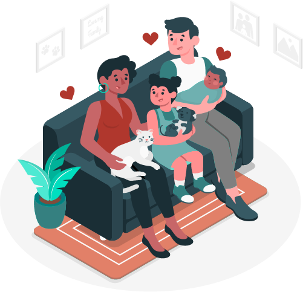
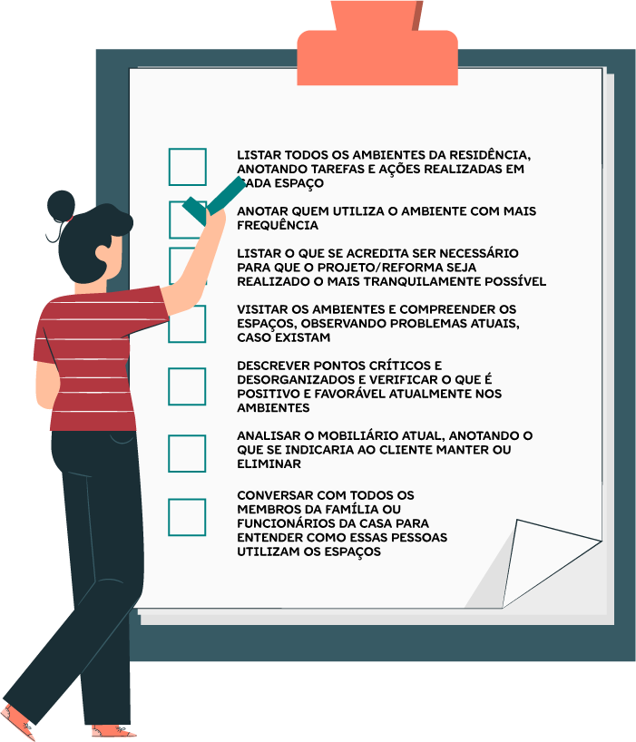

O design de interiores é frequentemente associado à criatividade e à escolha de elementos estéticos para criar e modificar ambientes. Embora essa seja uma parte fundamental do trabalho de um designer de interiores, um projeto de sucesso não acontece sem que sejam compreendidas as necessidades e as expectativas do cliente. Antes de explorar a criatividade na seleção de cores e materiais, o designer deve estabelecer uma base sólida por meio de um processo que começa com a relação estabelecida com o cliente.
Neste conteúdo, você conhecerá a importância de compreender o perfil e as necessidades do cliente, como destaque para as técnicas de entrevista e a elaboração do briefing como ferramentas essenciais nesse processo.
Para algumas pessoas, o ofício de design de interiores remete à imagem de profissionais desenhando livremente, escolhendo cores e materiais para os ambientes ou visitando lojas em busca de móveis e objetos de decoração para personalizar os espaços. Certamente tudo isso faz parte do dia a dia do designer, mas, antes de iniciar o processo de criação, etapas anteriores servirão como base para o projeto e esse processo começa com o relacionamento com o cliente.
A capacidade de entender as necessidades do cliente é a chave para um bom resultado. Alguns clientes não conseguem transmitir com clareza seus desejos, trazendo em algumas situações ideias muito amplas, ou seja, ideias que na realidade não atendem ao que ele realmente precisa. Por isso, é sua tarefa elaborar um programa de necessidades ao longo de sua relação com o cliente, criando um briefing humanizado.
É importante que todo o processo de trabalho seja agradável para ambas as partes. Não há uma fórmula de uma boa relação, pois cada cliente tem características distintas. Essa parceria, portanto, deve partir de uma abordagem em que ambas as partes contribuam, uma incentivando a outra. O designer, além de captar a personalidade e o estilo de quem utilizará a residência, deve compreender as necessidades reais desses indivíduos. A confiança mútua é fundamental para o bom desenvolvimento do trabalho.
Nesse sentido, utilizar uma linguagem entendível e ouvir o cliente pode ajudar na compreensão das ideias. A habilidade de ouvir e observar o cliente é de grande ajuda. Que tal praticar a escuta ativa conhecendo um novo cliente? Ouça o áudio a seguir e conheça as necessidades do casal Guilherme e Natália.
Nesse sentido, utilizar uma linguagem entendível e ouvir o cliente pode ajudar na compreensão das ideias. A habilidade de ouvir e observar o cliente é de grande ajuda. Leia o texto a seguir e conheça as necessidades do casal Guilherme e Natália.
Clique ou toque no botão de play para ouvir o áudio ou no botão de transcrição para ler o texto do áudio.

Família Santos
Fonte: Freepik (2023)
Ilustração representando a família descrita no briefing, sentada em um sofá na sala de estar. Na imagem, a mãe, Natália, está com um gato nos braços, a filha, Laura, está com um cachorro nos braços e o pai, Guilherme, está com o recém-nascido Pedro nos braços. Há um tapete no piso, um vaso com plantas ao lado do sofá e quatro molduras nas paredes.
Partindo para a prática profissional, imagine que você trabalha no escritório Decora & Cia e está desenvolvendo um projeto de interiores para este cliente: uma família recém-chegada do Japão, depois de um período de 10 anos morando em Tóquio a trabalho. Lá, o casal Guilherme Santos e Natália Santos, com 37 e 32 anos de idade respectivamente, tiveram dois filhos: Laura, de 6 anos, e o recém-nascido Pedro, de apenas 2 meses. Eles também são tutores de pets: o cachorro Arnold e a gata Felícia.
Devido às mudanças realizadas na empresa, Guilherme, que trabalha como analista de dados em uma multinacional, foi transferido de volta para o Brasil para ocupar um cargo de chefia. Natália trabalha como freelancer em social media em seu home office e sempre prezou por um espaço bonito e aconchegante para a realização do seu trabalho. No Japão, a família morava em um apartamento pequeno de dois quartos e trouxe na bagagem alguns móveis e eletrônicos. De volta ao Brasil, além dos móveis, a família trouxe uma experiência cultural que impactou a maneira como habitam o espaço, além de hábitos e costumes locais. Por isso, eles solicitaram um projeto de design de interiores para um pequeno apartamento de dois quartos que adquiriram recentemente.
O apartamento em que a família morava no Japão não tinha integração entre os cômodos, sendo constituído por um pequeno hall, sala de estar/jantar, cozinha integrada com área de serviço, hall dos quartos, dois quartos e um banheiro. De acordo com o casal, o apartamento adquirido para iniciar sua nova vida no Brasil constitui-se de um pavimento com seus ambientes integrados, como sala, cozinha e lavanderia, e dois quartos, medindo cerca de 70 m².
O casal deseja que a lavanderia seja retirada, deixando apenas o ponto hidráulico para a ligação de uma máquina lava e seca, pois eles pretendem utilizar a lavanderia coletiva, que conta com equipamentos de última geração. Natália disse que gosta de privacidade e conforto e precisa de um pequeno escritório, um home office, para atender a seus clientes.
Conhecer os habitantes do espaço e como eles se relacionam com o ambiente é a melhor maneira para atender às solicitações para cada ambiente residencial. Gurgel (2011) afirma que essa tarefa pode ser complexa, porém, a divisão por etapas pode auxiliar no projeto. A autora indica que as seguintes ações devem ser consideradas em uma análise inicial:
Após realizar esses questionamentos prévios, é possível aprofundar o briefing, realizando perguntas mais detalhadas.
Segundo Gibbs (2010), o processo de coleta das informações com o objetivo de identificar as necessidades do cliente pode ser chamado de briefing, ou programa de necessidades. Segundo a autora, o designer deve dedicar tempo e atenção com o objetivo de determinar o que é necessário, realizando um perfil do estilo de vida do cliente o mais preciso e detalhado possível. A atenção aos detalhes é determinante para um resultado satisfatório.
Sendo um processo lógico, alguns designers trabalham com questionários com perguntas preestabelecidas. Segundo Albernaz e Lima (1998), programa de necessidades é, “em termos genéricos ou minuciosa, [um] conjunto de necessidades funcionais correspondentes à utilização do espaço interno e à sua divisão em ambientes, recintos ou compartimentos, requerida para que um edifício tenha um determinado uso”.
Mauro e Panetta (2018), no contexto do design de interiores contemporâneo, afirmam que, ao projetar espaços interiores para uma residência na qual habita uma família – utilizando o programa de necessidades como ferramenta –, é possível atingir as expectativas de seus usuários. Com o conhecimento do espaço e de seus usuários, o designer de interiores terá pela frente a tarefa de adequar os ambientes contextualizando o espaço físico já existente com as necessidades do cliente, pois estas correspondem aos sonhos e às expectativas em relação ao uso daquele espaço, que até este momento é apenas um conjunto piso-paredes-teto.
Mas, afinal, o que é briefing?
O briefing no design de interiores é um processo fundamental que consiste na coleta e na análise de informações relevantes sobre um projeto de design de interiores. Ele serve como um ponto de partida essencial para que se entendam as necessidades, os desejos e os requisitos do cliente, bem como o contexto no qual o projeto será desenvolvido.
Gurgel (2013) destaca que é preciso priorizar as necessidades de forma individual para garantir que as expectativas do cliente sejam atendidas. O briefing é uma etapa crítica no ciclo de projeto, pois estabelece as bases para a concepção e a tomada de decisões subsequentes. Sendo assim, o briefing em design de interiores envolve vários elementos. Conheça-os a seguir:
Basicamente, como o próprio nome já diz, a identificação do cliente consiste em identificar e entender quem é o cliente, suas preferências, seu estilo de vida, seus valores e os objetivos para o espaço a ser projetado.
Uma avaliação completa do espaço em questão é realizada para determinar suas dimensões, leiaute, estrutura, condições técnicas, características arquitetônicas e qualquer restrição que possa influenciar o projeto.
O briefing deve abordar as necessidades funcionais do espaço, como o número de quartos, as áreas de estar, os espaços de trabalho, os requisitos de armazenamento e quaisquer funções específicas que o ambiente deva desempenhar. É importante conversar com todos os usuários do espaço.
O cliente deve comunicar suas preferências estilísticas e estéticas para que o designer possa criar um ambiente que reflita a identidade e o gosto desse cliente. É importante conversar com todos os usuários do espaço.
É fundamental estabelecer um orçamento claro para o projeto, definindo limites financeiros e expectativas de custos.
Definir prazos é essencial para planejar o cronograma do projeto e garantir que as expectativas de tempo sejam realistas.
O briefing pode incluir preocupações relacionadas à sustentabilidade, à eficiência energética e ao uso de materiais e recursos ecoeficientes.
O briefing é elaborado com base em entrevistas com o cliente, visitas ao local, pesquisas e análise de documentos relevantes. É importante que o designer de interiores trabalhe de forma colaborativa com o cliente para garantir que todas as informações essenciais sejam coletadas e compreendidas.
Uma vez concluído, o briefing fornece um guia claro para o desenvolvimento do projeto de design de interiores, garantindo que o resultado final atenda às expectativas do cliente e funcione eficazmente no contexto em que será implantado. Portanto, o briefing desempenha um papel fundamental na fase inicial de qualquer projeto de design de interiores.
Que perguntas não podem faltar em qualquer briefing para projeto residencial?
Cada briefing é um briefing. Cada cliente que você atenderá demandará diferentes necessidades. Em um prédio residencial, por exemplo, cada apartamento é diferente do outro, não é mesmo? Ainda que com as mesmas características físicas da edificação, cada apartamento refletirá as necessidades dos seus moradores, resultando em estilos, funções e conceitos completamente diversos.

Nesse sentido, pensar na construção de um briefing que seja humanizado, customizado para as diversas necessidades do indivíduo, é primordial na realização de um bom projeto residencial.
A seguir, confira algumas perguntas mais sensoriais que você pode e deve fazer ao seu cliente em um projeto residencial. Lembre-se de que, caso haja mais de uma pessoa no ambiente, é importante questionar todas. Pergunte o seguinte:
Lembre-se de que a comunicação aberta e colaborativa entre o cliente e o designer é fundamental para garantir que todas as informações relevantes sejam coletadas e compreendidas. Portanto, o tamanho do briefing pode variar, mas a qualidade e a completude das informações são mais importantes do que a extensão dele.
Segundo Phillips (2017), “não há uma fórmula única, padronizada, para o briefing”. O formato de cada briefing dependerá de muitos fatores, como a natureza do projeto, por exemplo. Naturalmente, podem ocorrer modificações do briefing durante o desenvolvimento do projeto. Em alguns casos, isso é inevitável. Contudo, garantindo-se uma unanimidade nos pontos essenciais logo no início, essas mudanças posteriores tornam-se mínimas. O autor reitera que o briefing deve ser escrito, e não verbal.
O formato de um briefing para design de interiores residencial pode variar de acordo com as preferências do designer e as necessidades específicas do cliente, mas geralmente inclui as seguintes seções:
Sala
Cozinha
Banheiro
Quarto
O briefing para design de interiores residencial deve ser personalizado para atender às necessidades e aos desejos do cliente específico e à natureza do projeto. Além das perguntas anteriores, lembre-se de realizar as perguntas sensoriais, pois elas nortearão de maneira importante o projeto residencial. A coleta de informações detalhadas e a comunicação eficaz entre o designer e o cliente são essenciais para garantir que o projeto atenda às expectativas e necessidades do cliente, criando um ambiente residencial funcional e esteticamente agradável.
Existem algumas ferramentas que ajudarão você na tarefa da elaboração de um briefing. Confira alguns exemplos:
Plataformas como o Google Forms podem ser ferramentas altamente propícias à coleta de informações pertinentes. Mediante a formulação de questões objetivas, é possível obter um briefing de design de interiores de maneira prática para ambas as partes.
Captura de tela inicial do Google Forms
Fonte: Google Workspace (s. d.)
O Refresher é uma plataforma para arquitetos, designers de interiores e engenheiros que pode auxiliar no desenvolvimento do briefing, além de facilitar a captura de novos clientes.
Captura de tela inicial do Refresher
Fonte: Site da Refresher (s. d.)
O Mailchimp é uma plataforma de automação de marketing e e-mail marketing que oferece diversas ferramentas para ajudar empresas e indivíduos a criarem campanhas de marketing e interagirem com seu público-alvo. A figura mostra a página na qual o Mailchimp destaca os recursos e as funcionalidades relacionados a formulários personalizados.
Captura de tela inicial do Mailchimp
Fonte: Site da Mailchimp (c2001-2023)
E então, preparado para elaborar um briefing para design de interiores residenciais?
Compreender o perfil e as necessidades do cliente é fundamental para o sucesso de um projeto. O relacionamento estabelecido entre o designer e o cliente desempenha um papel crucial nesse processo, sendo essenciais uma abordagem colaborativa e a criação de um briefing detalhado. Com as técnicas de entrevista vistas neste material, você pode obter informações cruciais sobre as preferências estilísticas, as necessidades funcionais e as peculiaridades do cliente, criando assim uma base sólida para o desenvolvimento do projeto.
A atenção aos detalhes, a escuta ativa e a comunicação aberta são fundamentais para garantir que o briefing seja uma ferramenta valiosa, para que o designer projete um ambiente residencial que atenda às necessidades e expectativas do cliente.